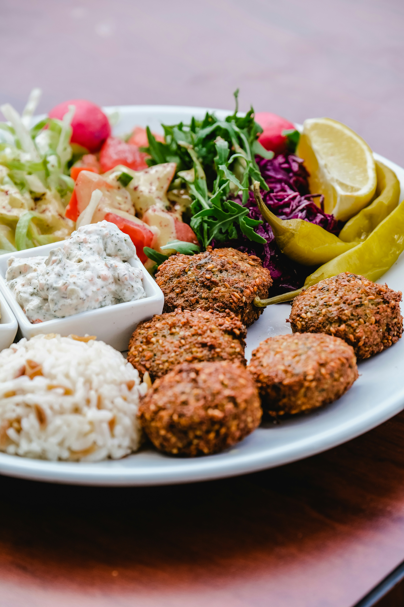

Falafel

Photo by Burak Babayiğit on Unsplash
Description
Crispy falafel that can be paired perfectly with hummus or tahini, along with pita bread and a light salad. Although falafel is traditionally fried, it can be baked as well (resulting in a slightly different texture).
Ingredients
- 2 cups dried chickpeas
- 1/2 tsp baking soda
- 1 cup fresh parsley leaves, stems removed
- 3/4 cup fresh cilantro leaves, stems removed
- 1/2 cup fresh dill, stems removed
- 1 small onion, quartered
- 7-8 garlic cloves, peeled
- Salt to taste
- 1 tbsp ground black pepper
- 1 tbsp ground cumin
- 1 tbsp ground coriander
- 1 tsp cayenne pepper, optional
- 1 tsp baking powder
- 2 tbsp toasted sesame seeds
- Oil for frying
Steps
- (One day in advance) Place the dried chickpeas and baking soda in a large bowl filled with water to cover the chickpeas by at least 2 inches. Soak overnight for 18 hours (longer if the chickpeas are still too hard). When ready, drain the chickpeas completely and pat them dry.
- Add the chickpeas, herbs, onions, garlic and spices to the large bowl of a food processor fitted with a blade. Run the food processor 40 seconds at a time until all is well combined forming the falafel mixture.
- Transfer the falafel mixture to a container and cover tightly. Refrigerate for at least 1 hour or (up to one whole night) until ready to cook.
- Just before frying, add the baking powder and sesame seeds to the falafel mixture and stir with a spoon.
- Scoop tablespoonfuls of the falafel mixture and form into patties (1/2 inch in thickness each). It helps to have wet hands as you form the patties.
- Fill a medium saucepan 3 inches up with oil. Heat the oil on medium-high until it bubbles softly. Carefully drop the falafel patties in the oil, let them fry for about 3 to 5 minutes or so until crispy and medium brown on the outside. Avoid crowding the falafel in the saucepan, fry them in batches if necessary.
- Place the fried falafel patties in a colander or plate lined with paper towels to drain.
- Serve falafel hot next to other small plates; or assemble the falafel patties in pita bread with tahini or hummus, arugula, tomato and cucumbers.
Note: The image shown is for illustration purposes only and may not be an exact representation of the result.
Home